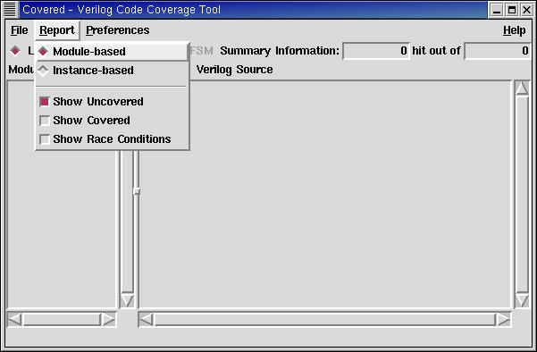

The report menu allows the user to display the currently opened CDD file contents in a number of different ways for analyzing. The options specified in this menu closely imitate the options in the "score" command. The type of report can be changed at any point in time while a CDD is loaded. When a report menu option is selected, Covered will automatically convert all information in the GUI to represent this report type. Figure 1. below shows the contents of the report menu. Each menu item is described below the figure.
Figure 1. The Report Menu
When the diamond to the left of this option is selected, the generated report information will be in module-based representation. A module-based report gathers all of the module instances that instantiate the same module and merges their results based on the module name. This is useful for understanding what logic in a module has been tested or untested without care to individual instance contribution. Selecting this report type (the default) will cause the "Instance-based" menu option to be automatically deselected (the two report types are mutually exclusive).
When the diamond to the left of this option is selected, the generated report information will be in instance-based representation. An instance-based report shows the coverage information for each module instance within the design. This allows the user to discern what logic is being covered in individual instances. Selecting this report type will cause the "Module-based" menu option to be automatically deselected (the two report types are mutually exclusive).
When the square to the left of this option is selected (the default), all uncovered lines, toggles, logic, and FSM states/arcs within the file viewer window will be highlighted for the user to quickly see what code was monitored by Covered but determined to not be fully covered. This option may be selected along with the "Show Covered" menu option to see both covered and uncovered logic within the same file.
When the square to the left of this option is selected, all covered lines, toggles, logic, and FSM states/arcs within the file viewer window will be highlighted for the user to quickly see what code was monitored by Covered and determined to be fully covered. This option is useful for the user of Covered to understand what logic was monitored during simulation. This option may be selected along with the "Show Uncovered" menu option to see both covered and uncovered logic within the same file.
When the square to the left of this option is selected, all logic lines that were found to contain a potential race condition and was, therefore, eliminated from coverage consideration by Covered will be highlighted by the colors as selected in the preference menu. This option is useful for the user of Covered to understand what logic was not considered for coverage information due to a detected potential race condition situation. Please see the User's Guide for more information on what Covered looks for in logic to consider it to be a possible race condition.